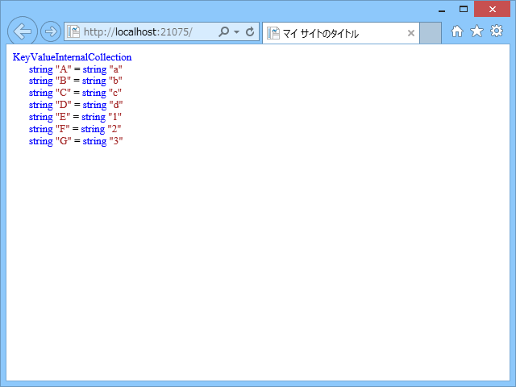
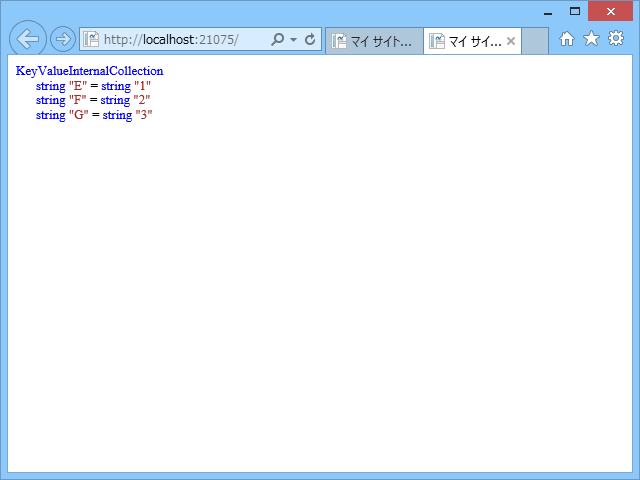

WebMatrix：Web.config の appSettings を使いこなす
公開日：
WebMatrix：ローカルとリモートで異なる設定を利用する方法を考えてみた - だるろぐ でちょっと興味がわいたので、Web.config について少しいろいろ試してみた。
基本
Default.cshtml
<!DOCTYPE html>@using System.Configuration
<html lang="ja"> <head> <meta charset="utf-8" /> <title>マイ サイトのタイトル</title> </head> <body> @ObjectInfo.Print(ConfigurationManager.AppSettings) </body> </html>
Web.config の appSettings セクションに記述したアプリケーション設定を読み込む。
@ObjectInfo.Print は WebMatrix でちょっとしたデバッグをするときに便利なのでぜひ覚えておこう。
Web.config
<?xml version="1.0" encoding="utf-8"?><configuration> <system.web> <compilation debug="true" targetFramework="4.0" /> </system.web>
<appSettings file="Web2.config"> <add key="A" value="a"/> <add key="B" value="b"/> <add key="C" value="c"/> <add key="D" value="d"/> <add key="E" value="e"/> <add key="F" value="f"/> <add key="G" value="g"/> </appSettings> </configuration>
appSettings セクションにアプリケーション設定を記述。file="Web2.config" は後述。
結果

たとえば、
var a = System.Configuration.ConfigurationManager.AppSettings["A"];
などとすることで、Web.config の appSettings セクションに記述したアプリケーション設定が得られる。
ちょっとめんどくさいけれど、API キーなどの静的値はなるべくハードコードせず、appSettings に書いておくべき。
外部 .config ファイルを利用したアプリケーション設定のオーバーライド

以下のような Web2.config ファイルを追加。
Web2.config
<?xml version="1.0" encoding="utf-8"?><appSettings> <add key="E" value="1"/> <add key="F" value="2"/> <add key="G" value="3"/> </appSettings>
結果

ConfigurationManager.AppSettings["E"] 以降の値が Web2.config の内容によって書き換えられる。
Web.config の file 属性で指定した外部 .config ファイルが存在しない場合は、読み込み処理がスキップされる。
外部 .config ファイルを利用したアプリケーション設定の強制削除
ちょっと Web2.config をイジってみる。
Web2.config
<?xml version="1.0" encoding="utf-8"?><appSettings> <clear /> // <- 追加 <add key="E" value="1"/> <add key="F" value="2"/> <add key="G" value="3"/> </appSettings>
結果

Web.config で記述したアプリケーション設定がクリアされる。
要するに、ASP.NET は .config を読んで、appSettings セクションに書かれた add や clear といったコマンドを AppSettings（Dictionary 型）に対して行っているだけ。
なので、
<?xml version="1.0" encoding="utf-8"?><appSettings> <remove key="A" /> </appSettings>
とすれば、特定のキーだけを消すことも可能。これを使えば、Web.config で行ったアプリケーション設定を Web2.config から自由にイジれる。使い方間違うとハマるかもだけど。
外部 .config ファイルを隠しファイルにする
結論を先に言うと、Web2.config を隠しファイルにしても、appSettings はちゃんと読み込まれる。
なので WebMatrix：特定のファイルを発行対象に含まない - だるろぐ と組み合わせることで、
- Web.config
- Web2.config（隠しファイル、リモートに発行されない）
という構成にすれば、
- ローカル：Web.config ＋ Web2.config のアプリケーション設定で動作
- リモート：Web.config のアプリケーション設定で動作
という風に運用できる（WebMatrix：ローカルとリモートで異なる設定を利用する方法を考えてみた - だるろぐ は発想を逆にすればよかった！）。